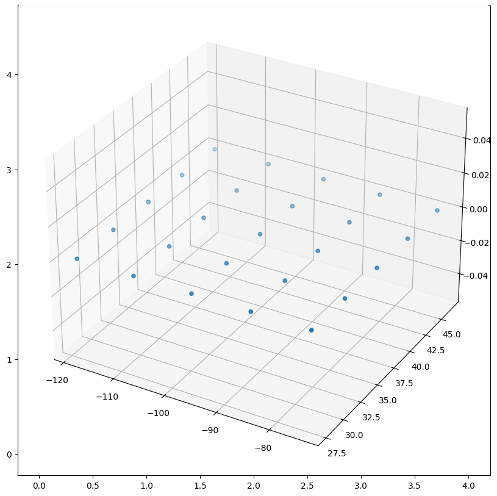

Self-Organizing Maps
A self-organizing map (SOM) is an unsupervised machine learning technique used to produce a low-dimensional (typically two-dimensional) representation of a higher-dimensional data set while preserving the topological structure of the data.
An SOM is trained using competitive learning. Upon being fed a training example, the SOM finds the neuron that is closest to the input (best matching unit or BMU). Then the weights of the BMU and the neighboring neurons are updated to become more similar to the input.
The update formula is as follows:
\(W_v(s+1)=W_v(s)+\theta(u,v,s)\cdot\alpha(s)\cdot(D(t)-W_v(s))\)
where \(\theta\) is the neighborhood function, \(\alpha\) is the learning rate parameter, and \(D(t)-W_v(s)\) is the distance between the target input and the current weight.
The neighborhood function allows the areas closest to the BMU to be updated more than the those farther away. The learning rate slowly decreases so the map updates more in the beginning rather than at the end.
As part of the Laurienzo research group, I investigated applications of self-organizing maps in many areas, including building efficient rail networks, displaying knots, and image classification.
Knots
Classifying knots has been researched extensively. In the mathematical field of knot theory, knot invariants such as knot polynomials
have been found to distinguish knots, but these methods may be computationally challenging.
We generated SOMs of various knots. This can be used for knot identification as seen in the promising heatmaps, a topic that has applications in computational biology and DNA.
Here is a figure 8 knot with the nodes of the SOM. The rightmost image shows four angles of the heatmap of nodes. Comparisons of this heatmap can show distinctions between the knot types.

Here is a pretzel knot.

Rail Networks
In this project, our motivation was to output a rail system that minimized the average time needed to travel between any two points in the network based on a dataset of the areas' population. This is especially useful for planning transportation networks in developing countries.
Below is the process of generating an SOM on the U.S. population. We start with our population dataset and a grid of 5x5 nodes (our SOM size). Then we used the SOM algorithm to adjust the nodes to match those of the dataset. Finally we connected the edges (railways!).

Next, we went through a pruning process on the edges to minimize a cost function. At each step we would remove an \(n\)th edge, then add it back, and out of all possible \(n\)th edge removals, we would finally remove the edge that gave the least cost. Below is a cost vs. edges removed graph.
Some other experiments with our designed algorithms included testing a hexagonal SOM vs. square initialization. There were not many noticeable differences, though the hexagonal SOM had more edges and therefore took more time. The below images show pruning on the first and last iterations of the hexagonal grid.
We also added considerations for altitude in our cost calculations based on the USA's geographic elevation dataset, as traveling uphill or drilling a tunnel takes significantly more resources. Similar experiments were conducted on other country datasets, including those of developing countries. See the slides linked here for more experiments done.
Fractional Linear Functions
Download Paper
Fractional linear functions are functions \(f\) of the form \(\frac{ax+b}{cx+d}\).
They have many important applications, including their usefulness as transformations, constructing the hyperbolic plane, and even in Andrew Wile's proof of Fermat's Last Theorem.
At PROMYS this summer, I teamed up with other math enthusiasts in investigating the properties of fractional linear functions without any outside sources, hence the name "exploration lab."
Here are some interesting results we proved in the above paper:
- If \(f\) has order \(n\) then the possible cycle lengths of elements in \(\mathbb{P}_p\) are divisors of \(n\).
- Every fractional linear function on \(\mathbb{P}_p\) has a cycle length which divides \(p^2-1\) or is exactly \(p\). (using matrix diagonalization and splitting fields)
- There are \((p-1)^2(p+1)(p)\) fractional linear functions without simplification. (using the orbit-stabilizer theorem)
- ... and many more!
On one of the final days of the program, my group gave a presentation! Here are the slides to our presentation.